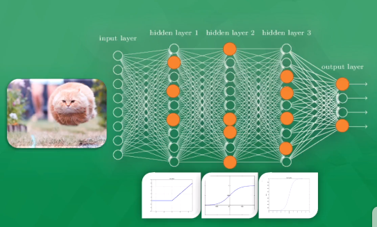
利用神经元的敏感度 达到识别效果
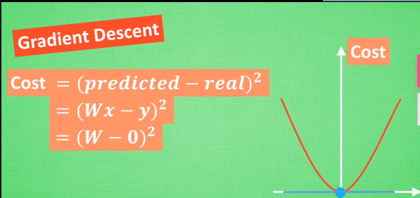
应用：
过程：
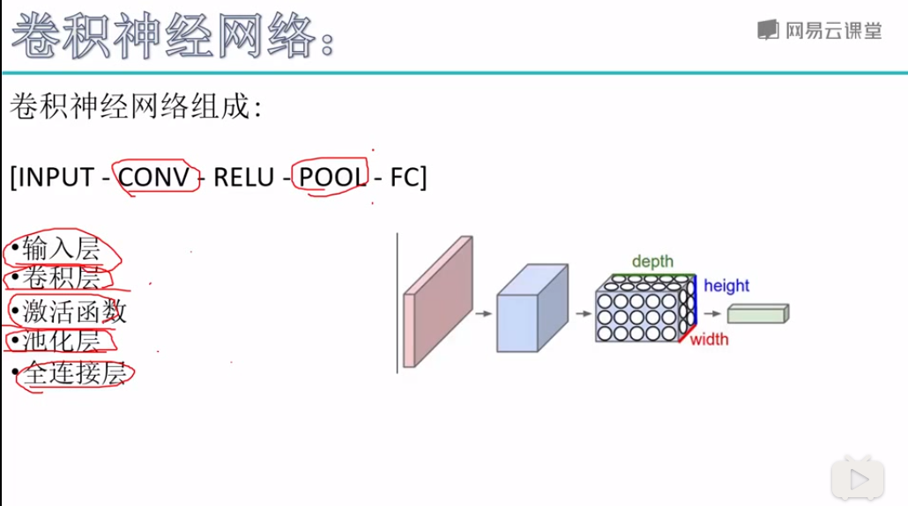
输入的图片其实是一个矩阵，计算机看到的是一个个像素点的值，它不能看到图片的特征，卷积层的作用是，利用批量过滤器，对一小块像素进行卷积操作，得到一个特征值，从像素值得到一些edges特征。再进行卷积操作，得到object parts，再进行卷积操作，得到object models(对于人脸识别来说 就是从像素值 提出来线条，由线条提取出眼睛 耳朵 鼻子等器官 ，再提取一次就获得人脸的特征，然后把提取出来的人脸特征套入普通的全连接神经网络进行分类（看是谁的脸）。如下图：
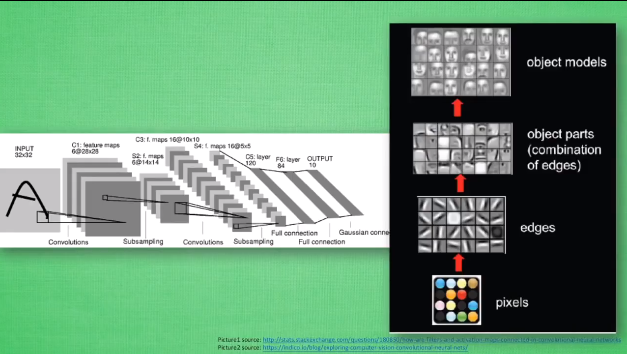
在卷积的过程中，图片的长宽不断被压缩，但深度越来越大，对图片的理解越来越深（笑），如下图：
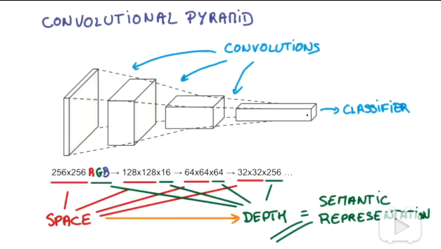
但是在卷积的过程中，随着图片的长宽被压缩，神经网络会丢失掉图片的一些信息，所以就使用POOL(池化层)来专门负责对图片进行压缩，而在卷积的时候不压缩图片，尽可能的保证图片信息不丢失。如下图：
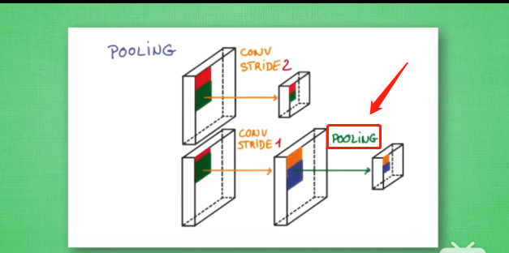
语音文字识别
输入的有序数据data1 data2 data3......有关联 这时卷积神经网络就无法考虑这些输入之间的关系。
循环神经网络RNN 在预测每个输入后 对输出结果都会有一个描述（相当于保留data1的预测），然后带着这个描述去进行其他的预测。
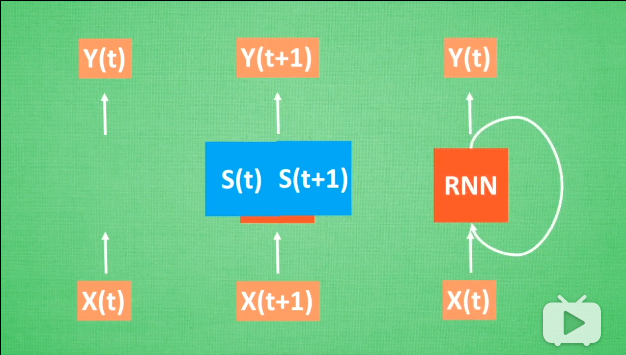
对于图片分析，只需要一个输入，即我们输入的图片：
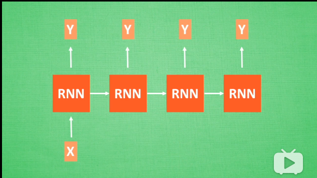
对于语言翻译，可能有两个输入，两个输出：
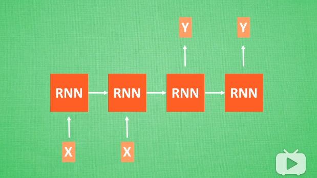
Long short-term Memory 即长短期记忆
RNN 的弊端 ：会出现梯度消失或梯度爆炸 （与每一级的权重有关），即“失忆” 为了克服这种情况，增强RNN的记忆，增加了几个控制器。如果判断分线的重要程度较高，就改变它的权重，并把它合并进主线，如果重要程度较低，就将它忘记。输出的时候将结合主线和分线考虑输出的是什么。
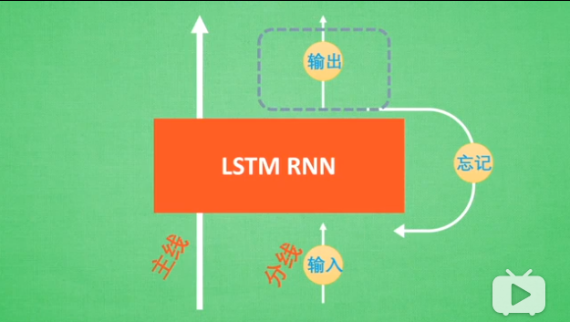
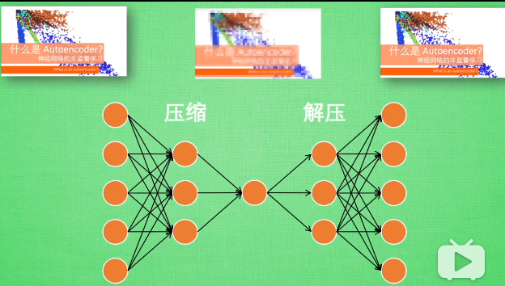
就是为了在读取的数据较大的时候 先对数据进行压缩 然后对数据的精髓进行神经网络分析，如下图所示：
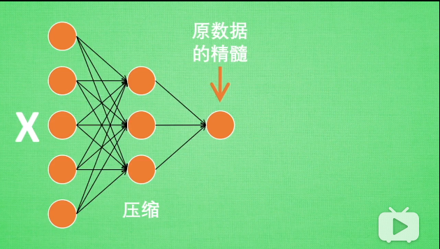
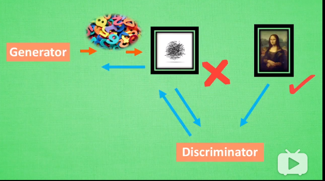
利用奖惩 来进行决策
比model free 多了一个建立环境的过程 可以自己学习思考
。。。
。。。
按照不同的准则还可能分为好多类。。。。。。
是一个决策过程
用Q表来存储每一个状态和动作
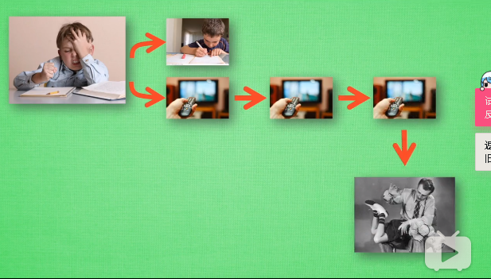
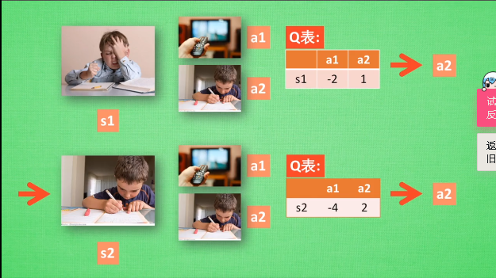
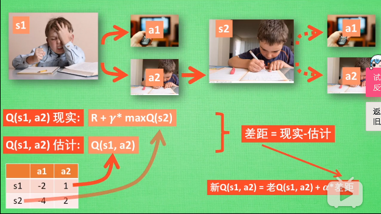
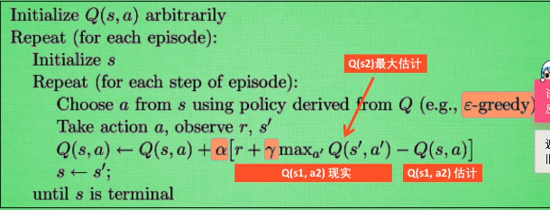
与Q-Learning 相似 决策部分和Q-Learning 相同 但是更新的方式不同。
Q L属于离线学习 Ss 属于在线学习
QL 比较冒险 Ss 比较保守
在电竞上 比较厉害
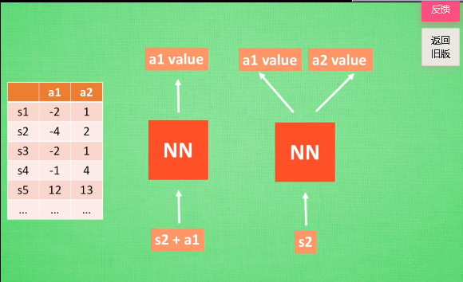
利用神经网络
是以值为基础 和 以概率动作为基础的一个结合体
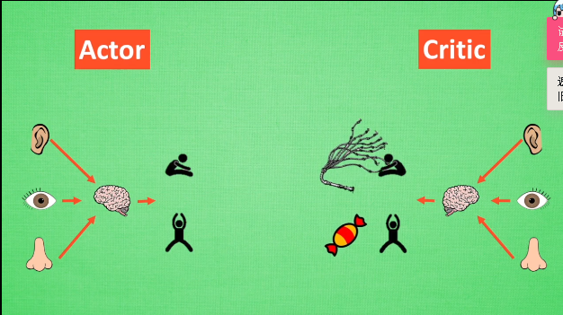
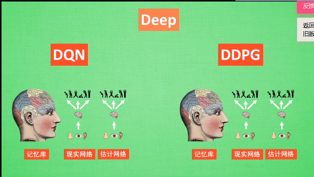
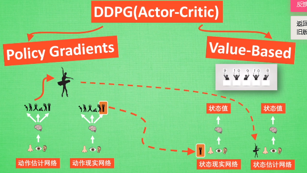
平行宇宙
做三道题 每一个宇宙的你做一道题 这样效率会很高
物竞天择，适者生存。
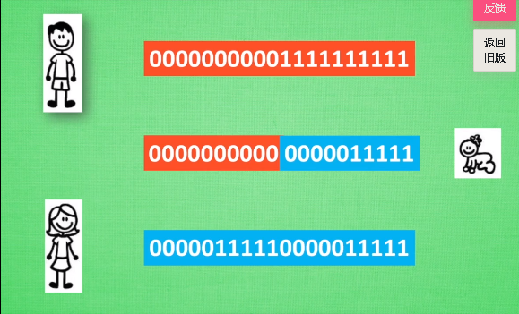